CGs
Posters
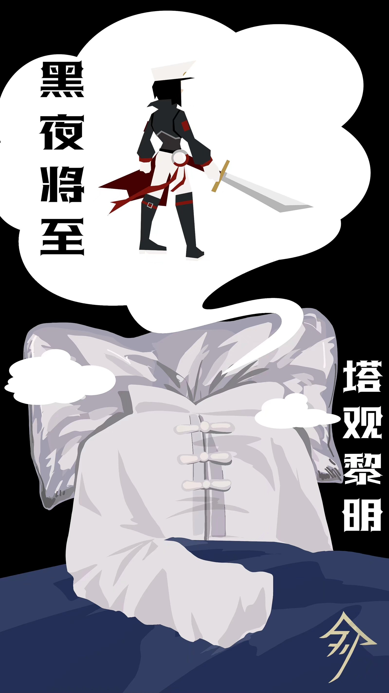
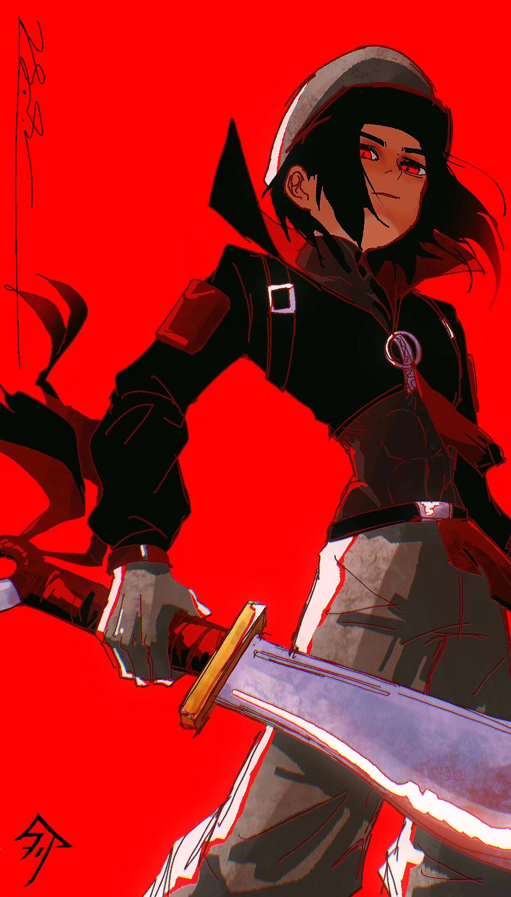
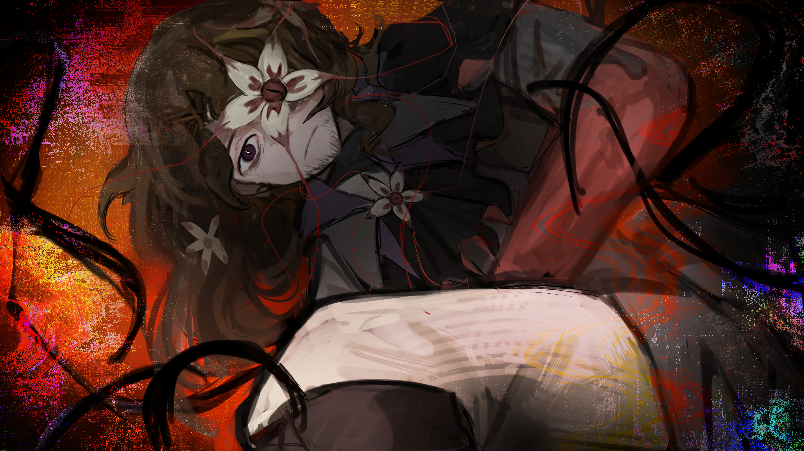

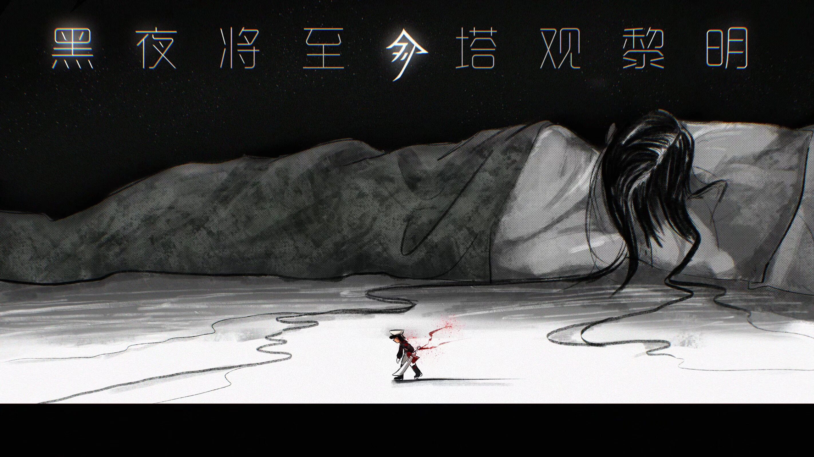
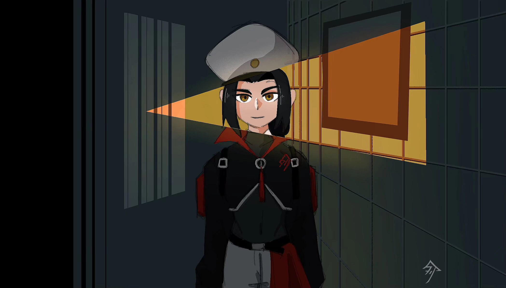


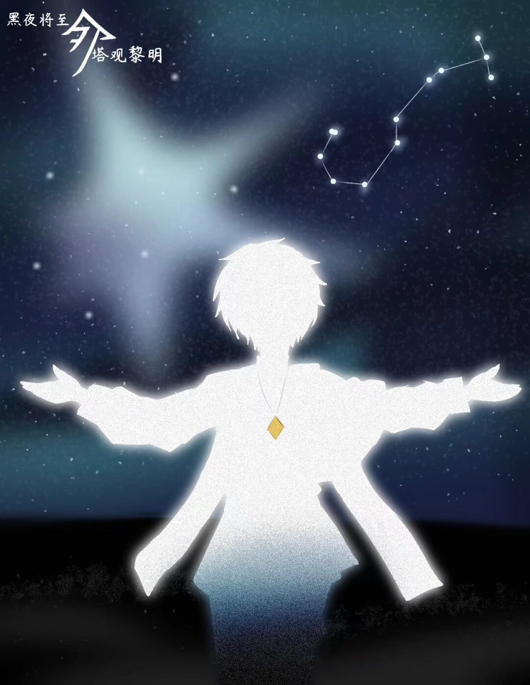

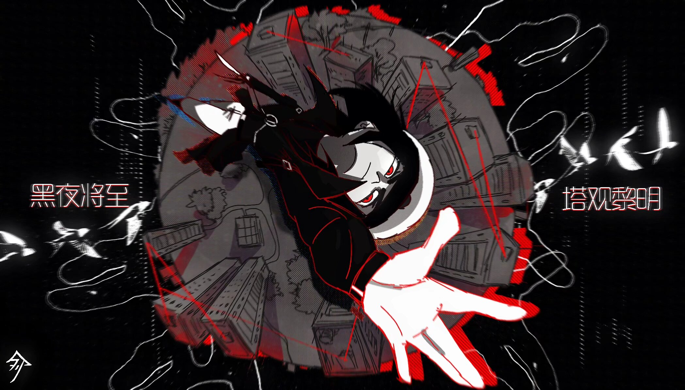
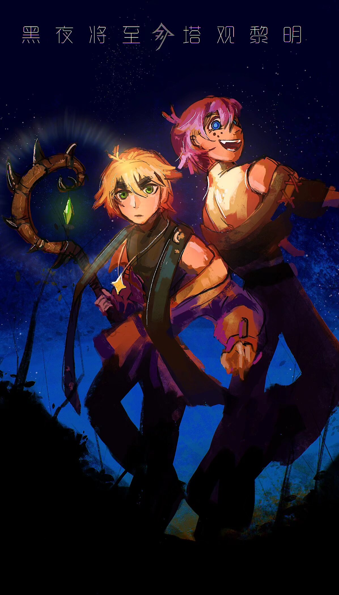


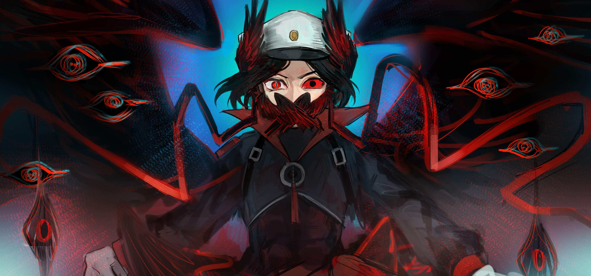
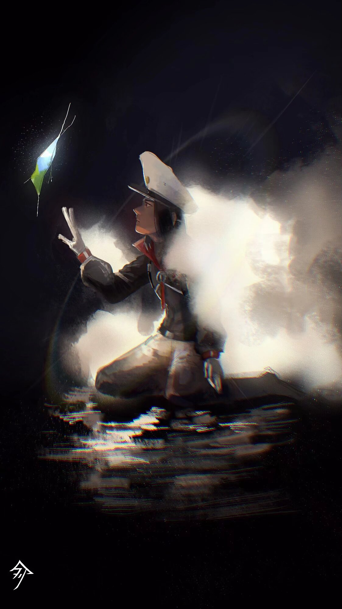
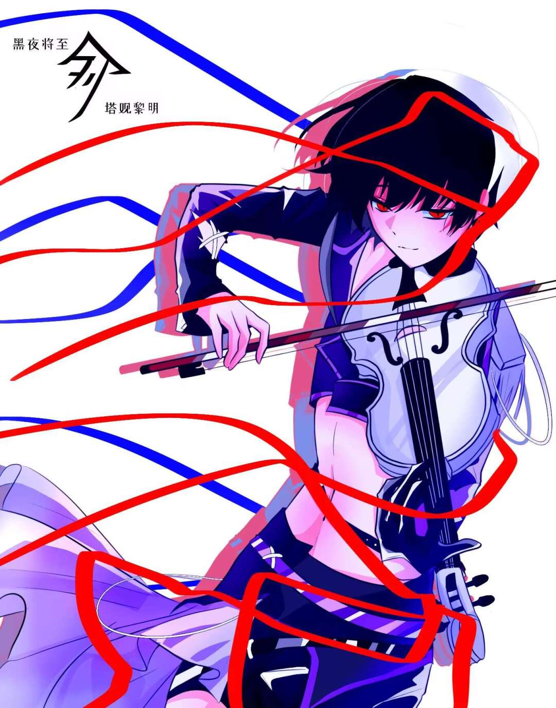
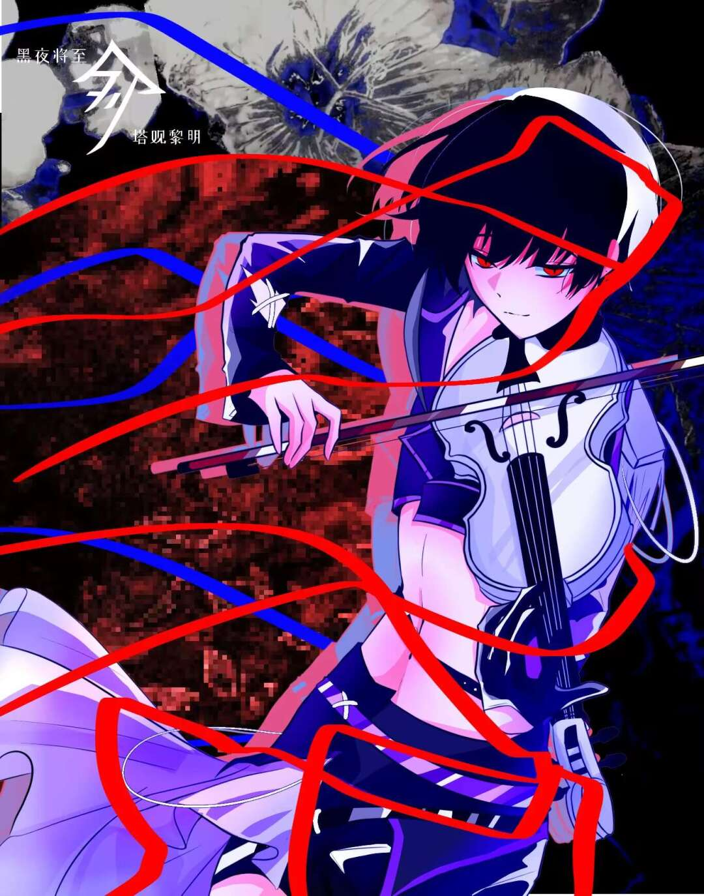
Character Cards
常色方
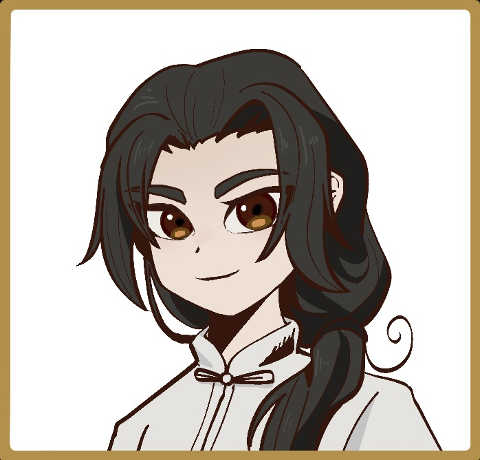
王耀
「观沧海九州千百年，护四方周全万象生」
常色方领导者 · 大学生 / 中医 · 伪装年龄 21 岁
疑似有轻到中度多动症。并没有每句话都带阿鲁（但不能不写）。动作执行力非常迅速，说话很多都会带感叹号。
说话很有活力，给人的感觉甚至比伪装年龄更小，但该老成的时候老人味又会立即反上来。目前干这行最久最有经验之人，在时间的奠基下有着比其他人更强的能力。
负责在军心不稳的时候稳定众人，也负责在其他人受伤的时候提供医疗协助。有一点不明显的欠和爱财，总体善良会让人想要亲近，脾气非常好，很少能被激怒和生气。因为伪装职业原因有在学意形拳。
和异色方算合作最密切之人，因为能力很强所以受到异色方的尊敬。
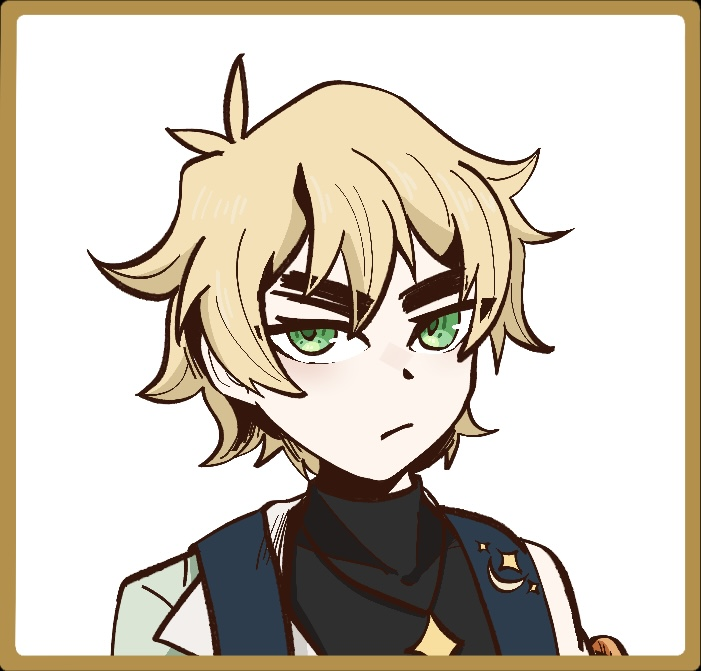
亚瑟
「以理探定事实界限，以身测量未知边缘」
大学生 / 天体物理学 · 伪装年龄 20 岁
日子过得很累的样子，一直思虑很重。傲娇属性时有时无，并不觉得自己是傲娇。不怎么骂人（不会说 baka），很有礼貌。
生活时常研究各种神秘学，目前已精通所有玄学技术。手工能力极强，家里有不少自制魔杖（正规的巫师魔杖）。一直很忧郁。
很吃激将法，而且对自己要求很苛刻。非常聪明，很喜欢逻辑推理。喜欢天文学一类的东西，每周都会抽空看星星观察天象。做事情说到做到。
过得比较孤僻，现实生活里也没什么朋友。其实不讨厌自己的异色，如果对方不是真人是游戏角色估计会挺喜欢。
希望可以帮上所有人，大家都可以依赖他，但是并不会主动说。其实确实会因为想要帮忙于是特意做一些事情，但没有人会知道。会把特意伪装成风轻云淡地顺手帮忙。
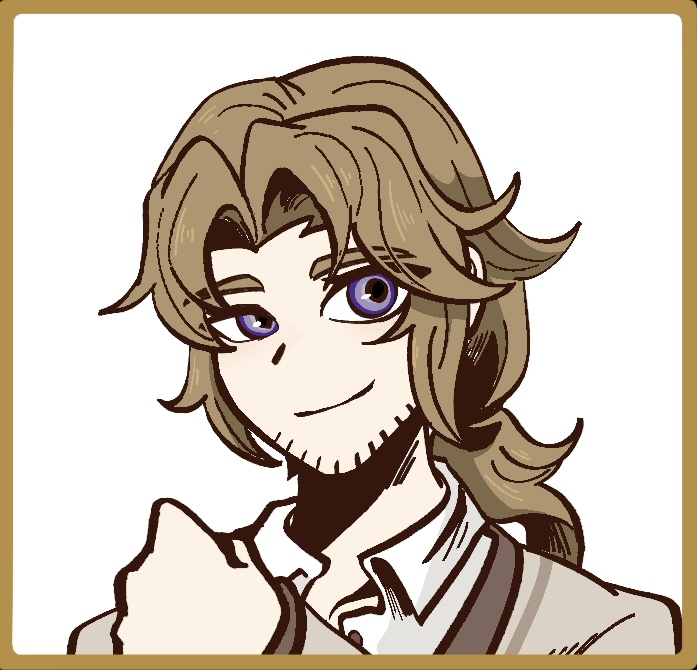
弗朗西斯
「光鲜亮丽尽展风姿，花开凋谢空余满堂」
大学生 / 生物老师 · 伪装年龄 22 岁
说话时“哥哥我”这种开头没有那么多，但语言系统很神秘，喜欢用其他人看不懂但是一看就很高级的雷霆比喻（：为此，我愿向你倾泻寡淡的狂喜）。
精神状态比较可观，处于一个无法选中的状态。虽然在家不喜欢穿衣服睡觉，但是不会在外裸奔（强调）。
艺术造诣很高，不太像是现代的潮流。人比较聪明但是几乎每节课都在打盹。善于剖析情感问题。虽然看着外热实则内冷，对一切的看法都空虚淡漠。
喜欢人类和讨论哲学，喜欢有生命力的东西。同人男，很喜欢写同人但是从来不发。放养了自己的异色，称之为各自有各自的选择自由。
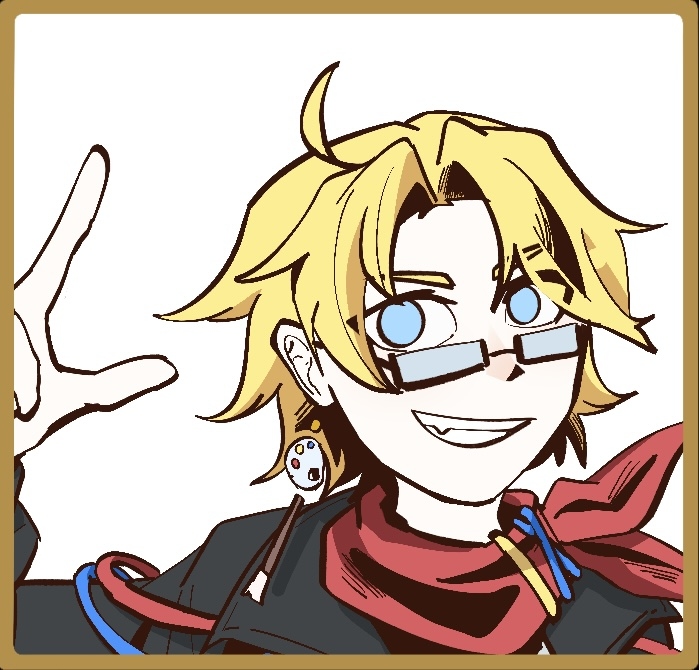
阿尔弗雷德
「礼炮轰鸣万道开，响声齐鸣世界来」
大学生 / 漫画家 · 伪装年龄 19 岁
不怎么说“Hero”这种打头。活力有很多，但是总在整活上。在王耀下线的时候作为牵头带领其他人。
非常爱说冷笑话，也喜欢收集冷笑话。脑回路很诡异，执行力非常强悍。AKY 属性很明显。常说的句子是：“懂你意思”（实际可能并不懂）。
喜欢创新结合，善于总结人际关系。看似大大咧咧，实则在安慰人和分析事情上很有路子，思路有点像是 ai。抗压能力很强，精神状态非常好。
理解异色的直接了断，但不理解对方为什么这么痴迷于把人弄死。觉得事情不至于到这个鱼死网破的程度。
其实和亚瑟那个帮忙很像，但是装不住云淡风轻，一般装一半就开始透题了，到最后就是嘿嘿嘿你看我的雷霆 xxx。
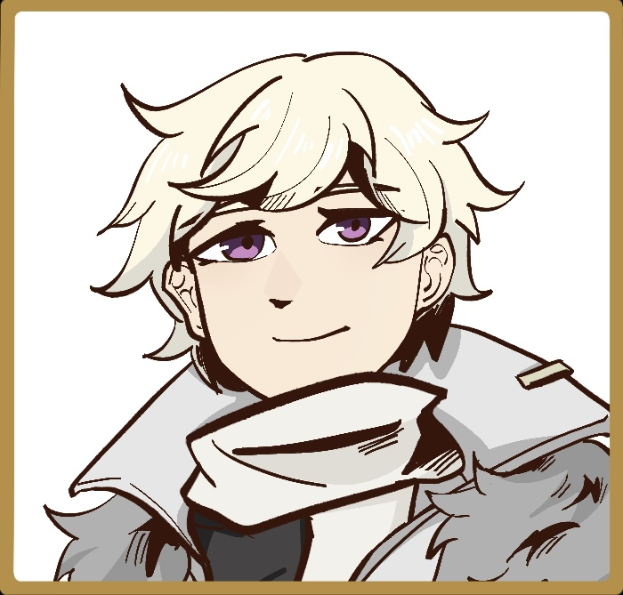
伊万
「苍白之书聆听何方，白雪皑皑肃清肮脏」
工作 / 游戏编剧 · 伪装年龄 23 岁
工作很忙。宅，很不喜欢出门但是网络的重度依赖。喜欢的事情是写作和跑团 coc。喜欢开一些无伤大雅的玩笑。
精神状态最不稳定之人之一，但自身的痛苦极少向外透露，防备心极高不容易信任他人。有水管（合法渠道获得）。经常挂着经典的 ^L^ 表情。
很善于讲故事。对自己的异色可谓是保护有加。非常可惜自己无法在异色的【梦境】界进行活动。
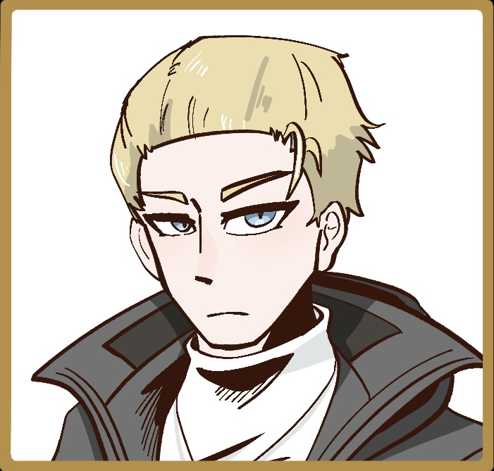
路德维希
「水平线丈量的国土，是黎明初升的辉光」
大学生 / 电气工程师 · 伪装年龄 18 岁
最心无旁骛之人，受影响最小，大部分时间下最关心现实生活而不是梦里破烂篓子。本人有着极强的接受能力，看什么都波澜不惊的样子。
运气非常背，经常大霉小霉不断。对工作有一定的天赋在，尤其是电相关。其他人还是希望他可以保持这个三不沾状态，毕竟处理这些事情确实危险的没边了。
异色懒散样子让他并不是很想去认此人是自己异色，索性是减少理会那些事情，自己干自己的了。
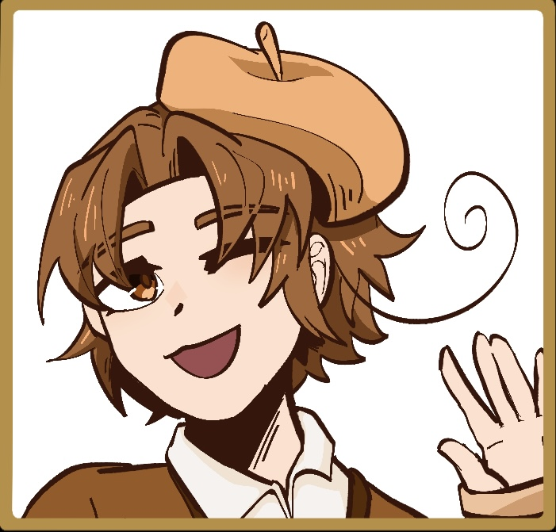
费里西安诺
「保存着信念的人手握希望的长明灯」
工作 / 美术老师 · 伪装年龄 26 岁
和比格一样 veveve 的。话真的很多。只记得美好的事物。遇到困难就跑，所以过得还挺开心的。
会给其他人（尤其是女性）起一些意大利语缩写的小昵称。虽然看着有点呆呆的，但是也会突然说出一些非常有深意的句子。
有努力在变强。一直苦恼着自己无法帮到其他人。害怕被其他人抛弃。觉得自己的异色很可怕，但是因为异色很强所以也希望异色可以保护自己。
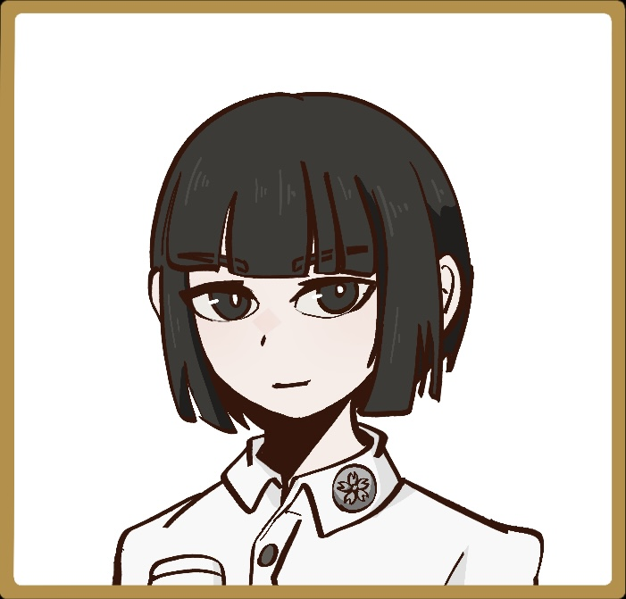
本田菊
「或许某一天，我们都可以归乡，盛开樱花」
大学生 / 侦探小说作家 · 伪装年龄 21 岁
真正天天想罢工之人。有礼貌但是没有天天鞠躬。喜欢养各种小动物，尤其是鸟类，观鸟大师。画技不错，善于画人外。
总会给出来一些意料之外的想法和视角。经常刷一些很诡异的视频然后发群里。
精神最不稳定之人之二，天天想要退出地球 online，隔三差五给王耀写辞职邮件能不能退出组织，王耀天天劝你退日本就完蛋了。
最恨异色之人，真的被异色折磨得很惨。天天都要听异色在后台叨叨叨。
异色方
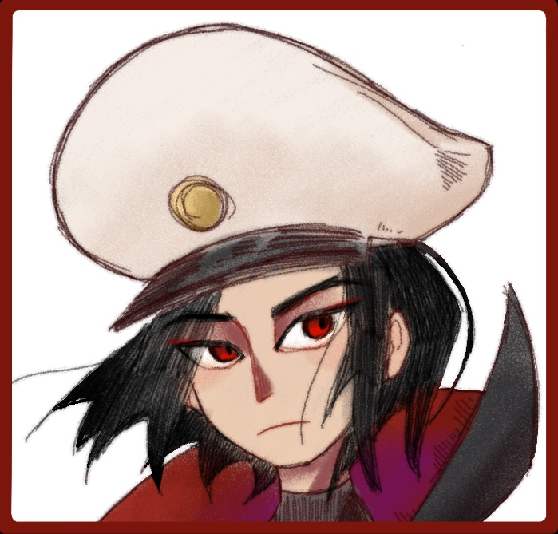
王黯
「守虚妄世事阴阳转，斩恶念邪祟魂灵灭」
异色方领导者
首先不傻，一定不能傻，智商不够就不对味。乐于做局布局，善用战术和各种做局。一般情况要你被他坑个彻底才能意识到被坑了。
利用起身边人可谓不择手段。如果对方不愿听从会武力强行压制。讨厌自己的计划被打乱，也讨厌超出计划外的情况。严于律己严于待人，教条主义，不允许其他人比他更厉害。
说话确实会带脏字，用“爷/小爷”替代“我”的人称，但不是句句都有的。说话方式比较精简，不喜欢多费口舌，但是骂人的时候文笔如三峡决堤，常进行借物喻人。
带脏字骂人不够高级，借物喻人还得加上 PUA，主要是必须掌握主动权。喜欢看其他人恐惧自己的样子，但讨厌假惺惺的东西和讨好。光骂人只会显得像是破防会减你黯爷的 b 格。
和熟悉的人说话会变成隐藏吐槽役（其实话还挺多的这人）。不能说其他人和他关系好，只能说所有人都挺怕他。
对常色的态度意外很好，可能常色傻逼少好沟通吧。和自己常色相处时间相当久，在相互对峙中找到了阴阳平衡的办法。
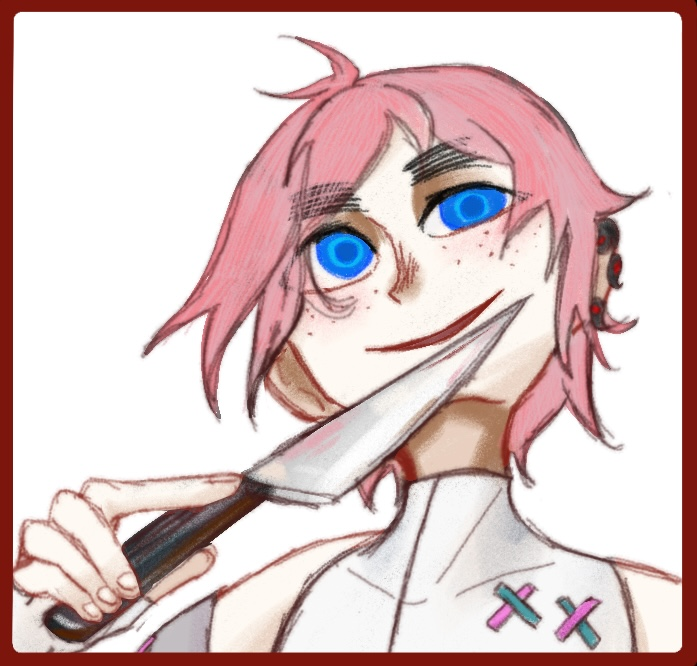
奥利弗
「以糖裹蜜深似渊海，以噬吞渊光穿雾霭」
异色方
纯癫子。不娇，这个不能娇，但疯一定要有。自己不说脏话，语言上很讲究。对其他人说 dirty talk 的耐受度很低。
躁狂患者，需要一定的活力但不能高于常色。正常情况不会是近战位置，偏向于法师和辅助位。
非常喜欢 G 向和血肉艺术，会进行一些常人看来相当诡异的提议，喜欢血肉的生命力（：我超喜欢蛾和蝶那种，在蛹里只是一泡水）。
很喜欢毛茸茸的玩偶和各种洋娃娃一类的玩具，是会养一堆 bjd 的那种类型。看到可爱的东西会有可爱破坏症想要一把捏死，xp 也挺猎奇的看什么都觉得萌萌的。
虽然大部分情况其他人会觉得奥利弗有点恶心，但是这么久也被恶心习惯了。很喜欢自己的常色，觉得常色很可爱想养。

弗朗索瓦
「锈水腐朽剥离骨肉，恒常喜乐事态恒古」
异色方
懒，不只是不动，话都懒说。很能睡，相当能睡。邋遢，不打理自己的外观。其实一直不想上班但是其他人拖着他上班。
有着很强的精神和身体抗压能力，尤其是在毒这点上非常有耐受性。为了图方便和省事可以让自己抗压更多东西。
日常和虫子石头腐烂植物作伴。表面上啥都不关心的样子，实际上很在意人，真出事了还是会急一下。
有时候会因为不干事让其他人工作量骤增而被其他人怒斥。对自己的常色无感，准确说是无法理解也懒得理解。
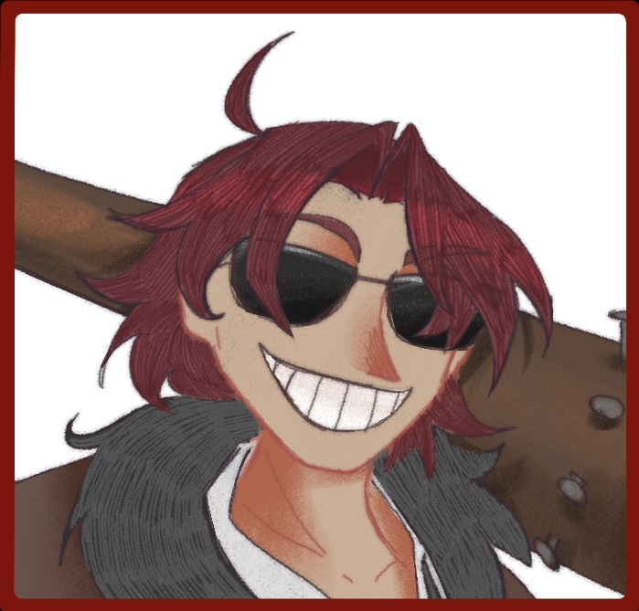
艾伦
「雷霆万钧抒梦想，刀枪在握指方向」
异色方
手枪决定大脑，大炮代替思考。杀戮欲望极高，一直都是“我想杀人”的样子。习惯武力解决一切。
不常参与脑力行动，但也没那么没脑子，关键时候也会给出一些解决思路（但是成本不如武力直出还是会选择打过去）。
比较一根筋，不听劝而且还比较莽子。讨厌假惺惺的东西和讨好，但如果你能打得过他则会引起他的兴致。喜欢强者，慕强，但是又会嫉妒。
因为在思考能力上差一截所以其他人很喜欢把他当枪使。日常觉得常色太保守了，而且太吵闹了。
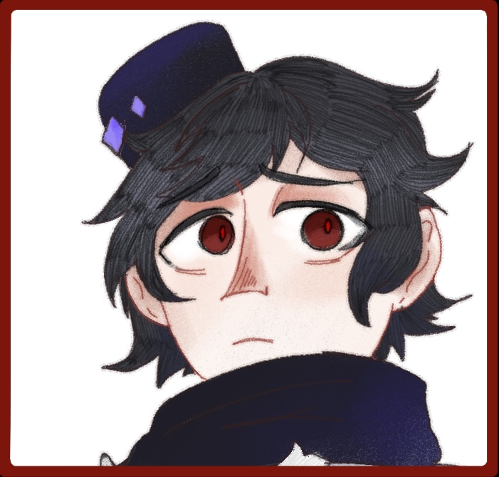
维克托
「巨物温情悲悯悠长，以退为进祈愿安康」
异色方
和平主义，回避性人格。不喜欢打架，经常在战场上就跑了，但不代表不会打，是数值怪。
思想非常悲观，会把矛头全部对准自己然后就这样自闭了。自闭很难哄，最难哄的一个，而且经常自闭。
和所有人关系都不差，但就是太难哄这个祖宗了。因为立场问题对常色态度很好，也很好说话。

爱因斯
「对角点食用的恐慌，是噩梦降临的声望」
异色方
人有点吊儿郎当的。粗心大意。有点异食癖在身上。会被卢西安诺调戏，或者威胁，但对此乐此不疲。xp 非常诡异，可以把棺材当装饰品用那种。没什么“尊敬尸体”的概念。
某种意义上命也挺大的。在一般情况不犯事的状态下，会让他自由爱干啥干啥，别添乱就行。对常色无特别的感觉，也仅限于合作的感觉。
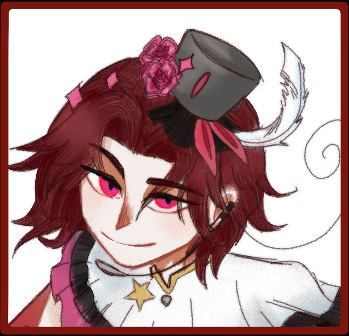
卢西安诺
「心怀着怨恨的人奏响玩昧的狂想曲」
异色方
玩世不恭，对什么都抱着看乐子的心态。恶劣，而且习惯性骂人，骂得还很脏。很喜欢用反讽的方式来嘲笑别人。先表演对方崩溃的样子然后再哈哈大笑。
觉得折磨别人很有意思。爱好就是拿别人的不开心给自己开心开心。
一直有想着怎么获得指挥权，但也仅停留在想想的阶段。是聪明人，虽然说要有抗争精神但不会去做纳命来的事情。
觉得常色是弱鸡，废物，没有一点战斗意识。
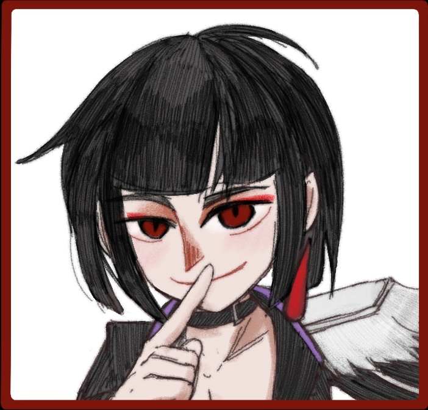
本田葵
「或许某一天，我们都得到认可，血染大地」
异色方
主语有时候是“我”有时候是“小生”。喜欢装作一副毕恭毕敬的样子给你使阴的。
神经病奶牛猫，最爱干的事情是跑到王黯面前嚼口香糖老吴老吴。阴湿的鬼，会挑衅所有人。愿望是整波大的给世界搅得天翻地覆。
性格残忍，对生命不屑一顾。不知道为什么老想着怎么烹饪人类或者进行一些诡异的嵌合行为（：鸡皮包着人扔锅里，就能做出只有肉的包子）。
很有自己想法，但是王黯不允许，其他人也不允许。喜欢看常色崩溃，所以有机会就会去逗常色玩。